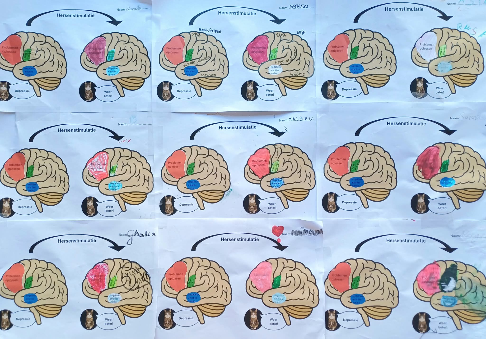
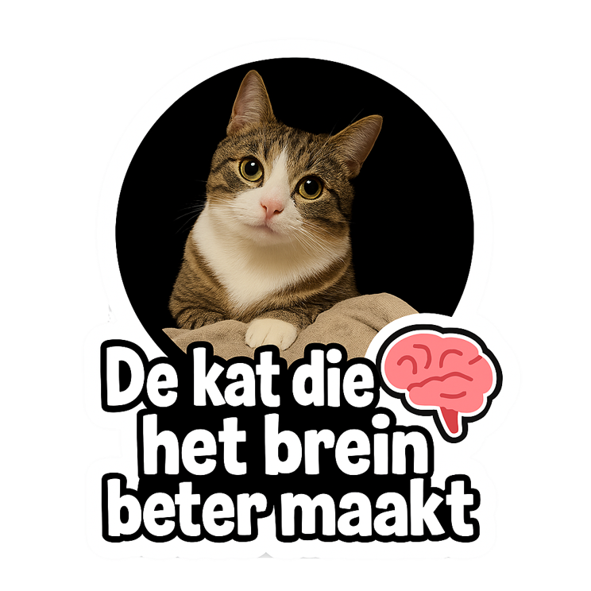
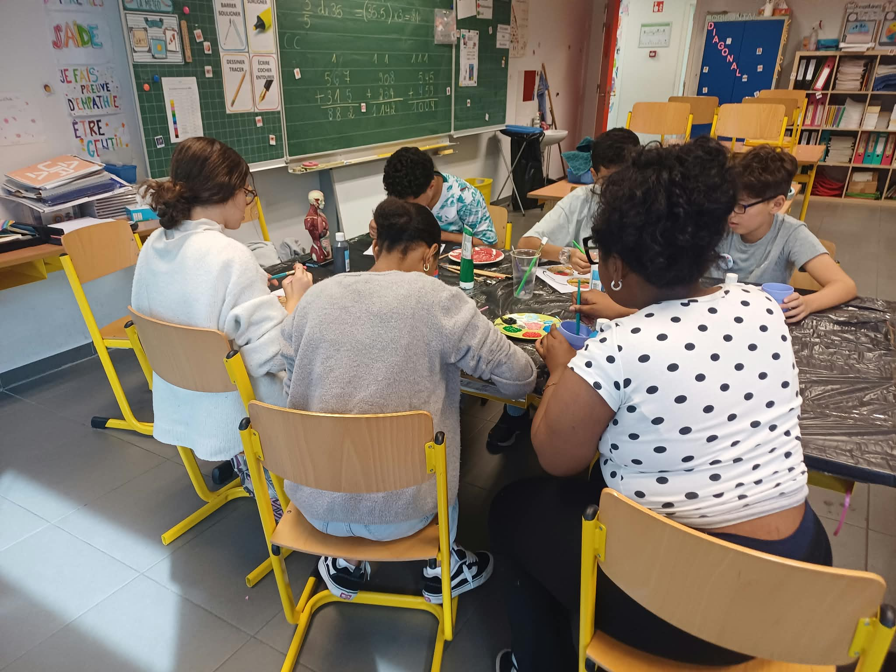
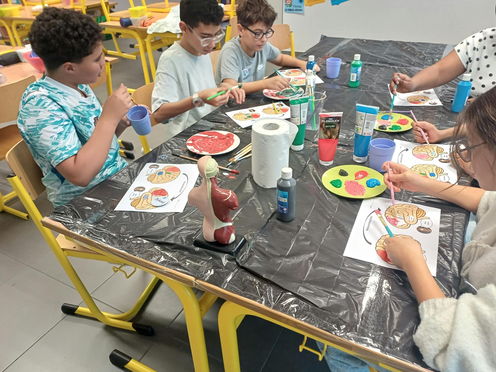
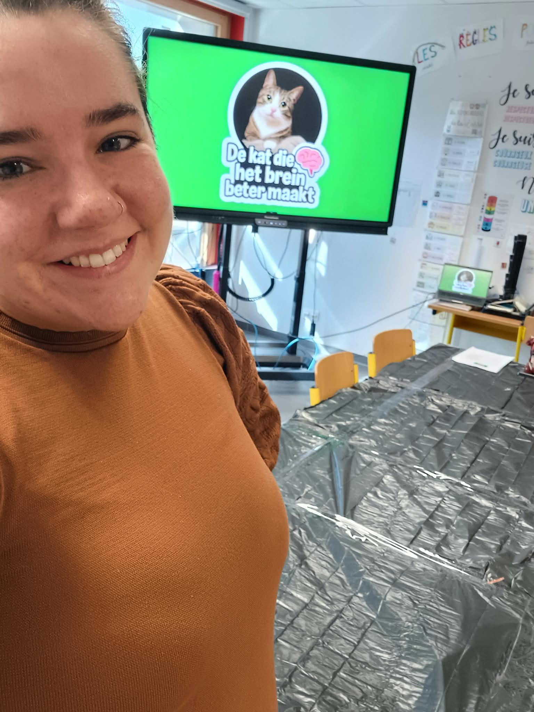

Interactive neuroscience workshop (EN/NL) for children (10–14 years)
Developed by Evelyne Fraats, doctoral researcher in social neuroscience
In this workshop, children will discover how doctors and scientists can influence the brain. The ultimate goal is to inspire children about the human brain and how we can change it to make people feel a "little better".
Children will learn about different regions of the brain and explore innovative techniques used to influence them. Guided by Evelyne Fraats, a doctoral researcher, and her cat Mittens, participants are taken on a fun and interactive storytelling journey into the fascinating world of neuroscience.
The workshop makes use of storytelling, creative painting activities, and hands-on experiments.
The workshop was designed by Evelyne Fraats for a science outreach project related to her doctoral research.



Interested in organizing this workshop for your school or event?
Feel free to get in touch for more information, availability, or collaboration opportunities.
This workshop was developed as part of a science communication course organized by Scimingo.